10 Days in Rio de Janeiro: A Sun-Soaked Escape
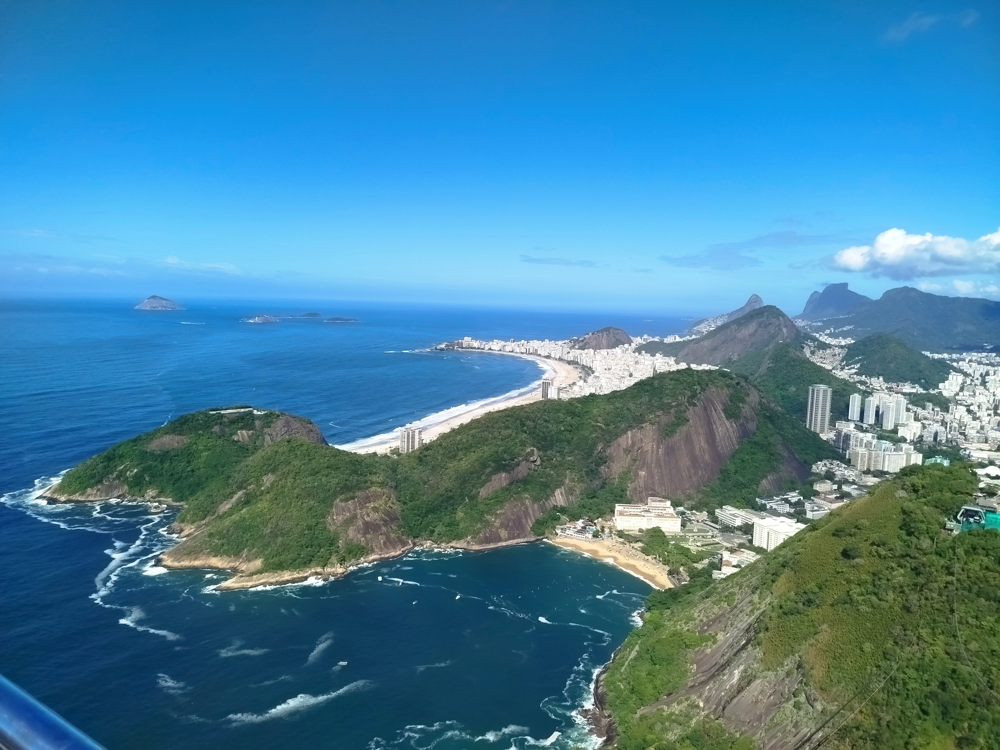
We spent 10 unforgettable days in Rio de Janeiro, soaking up the vibrant spirit of the city. From relaxing on the iconic beaches of Copacabana and Ipanema to witnessing a magical sunrise at Cristo Redentor, our trip was packed with memorable moments. We explored the lush Parque Lage, admired the colorful Escadaria Selarón, rode the cable car to Pão de Açúcar, and strolled through charming Urca. One evening, we enjoyed an authentic samba show on Rua do Ouvidor, immersing ourselves in Rio’s musical soul. Throughout the trip, we delighted in incredible food at local botecos and restaurants, and took time to unwind with several laid-back days by the sea.
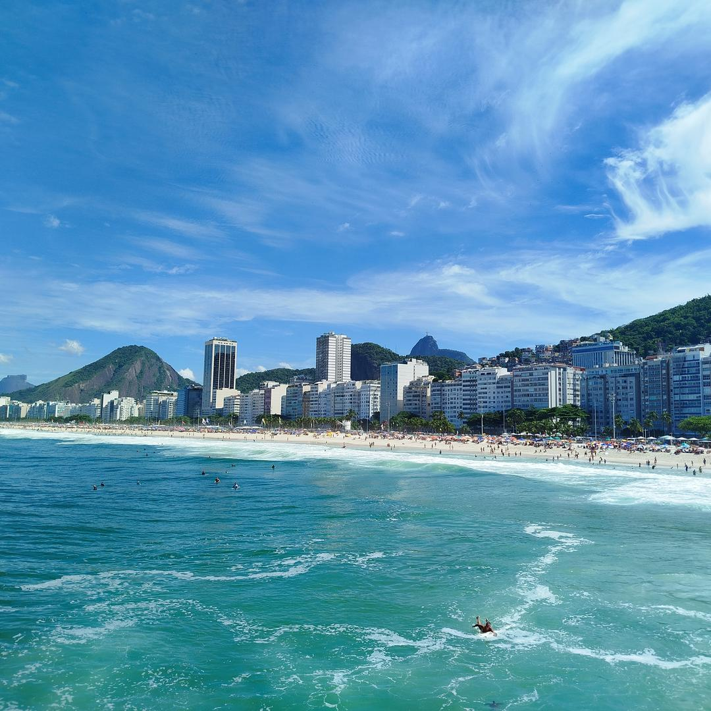
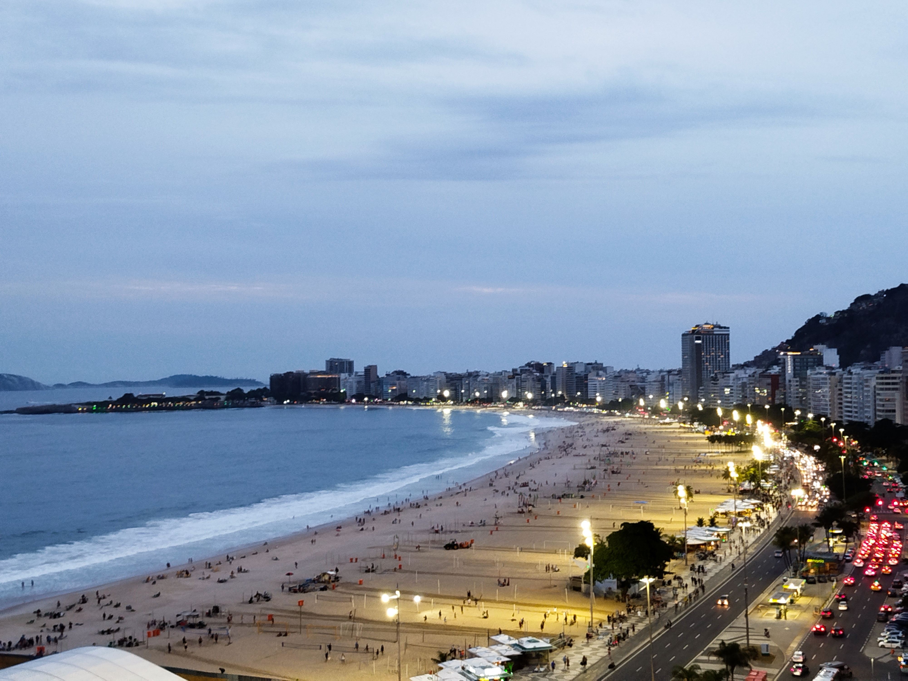
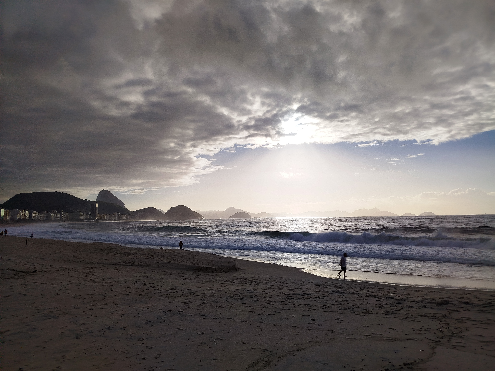
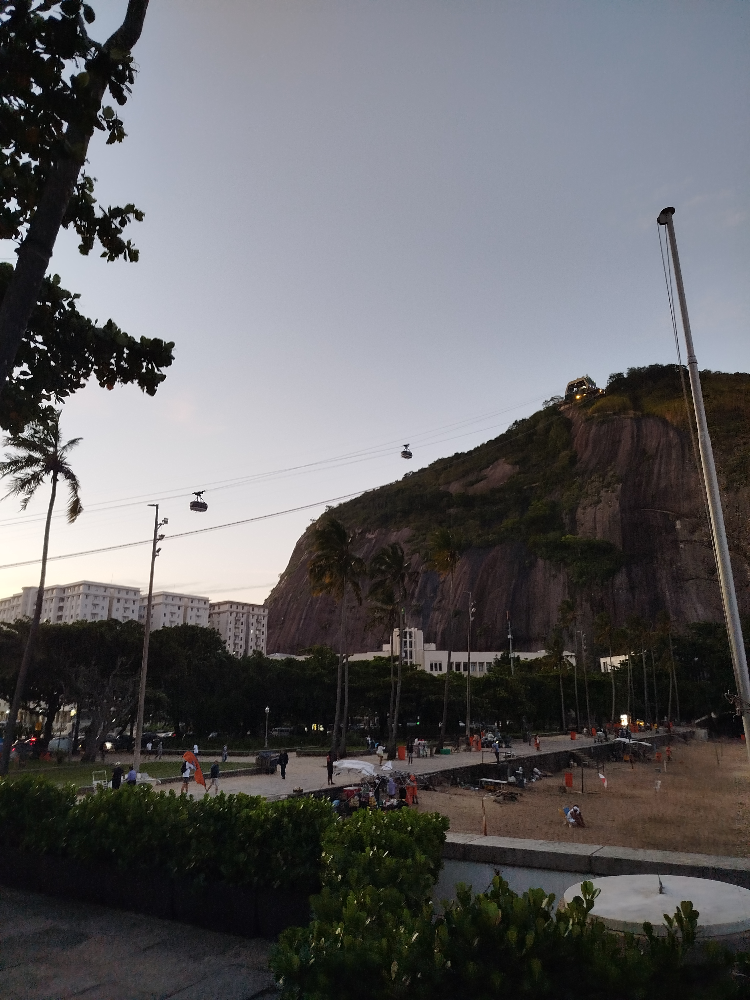
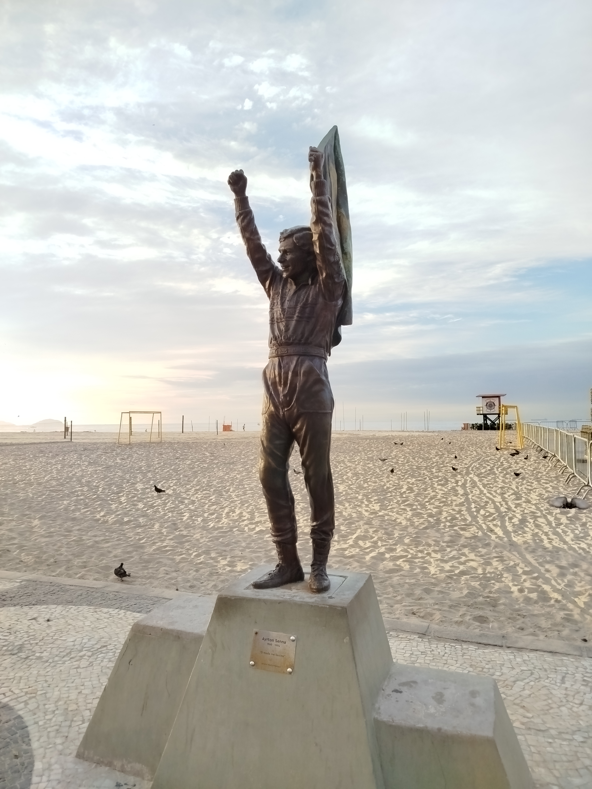
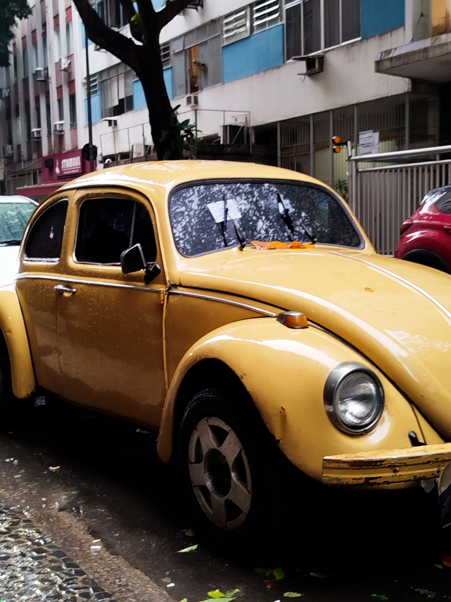
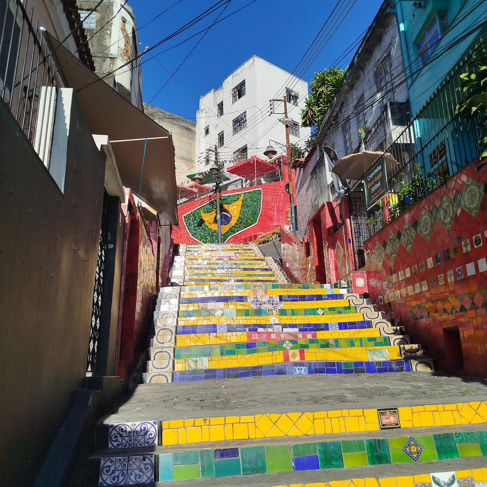
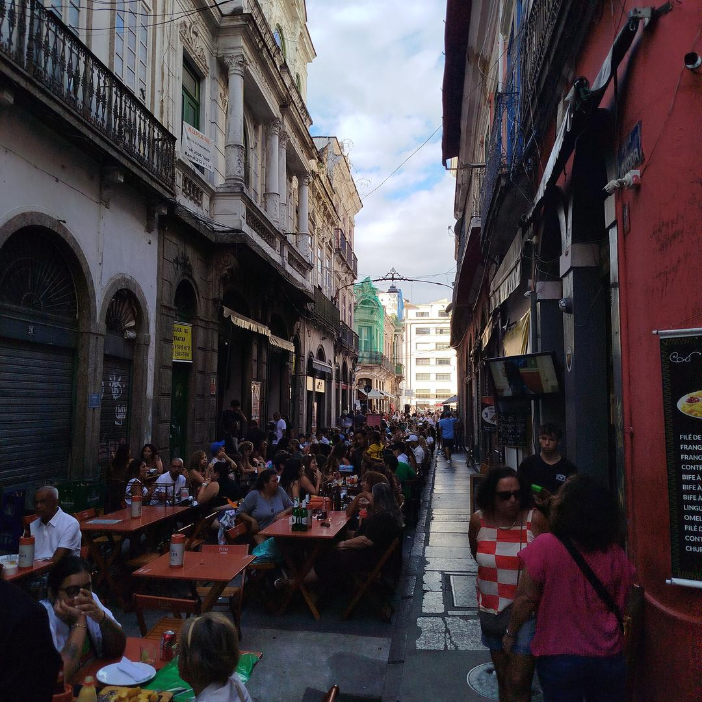
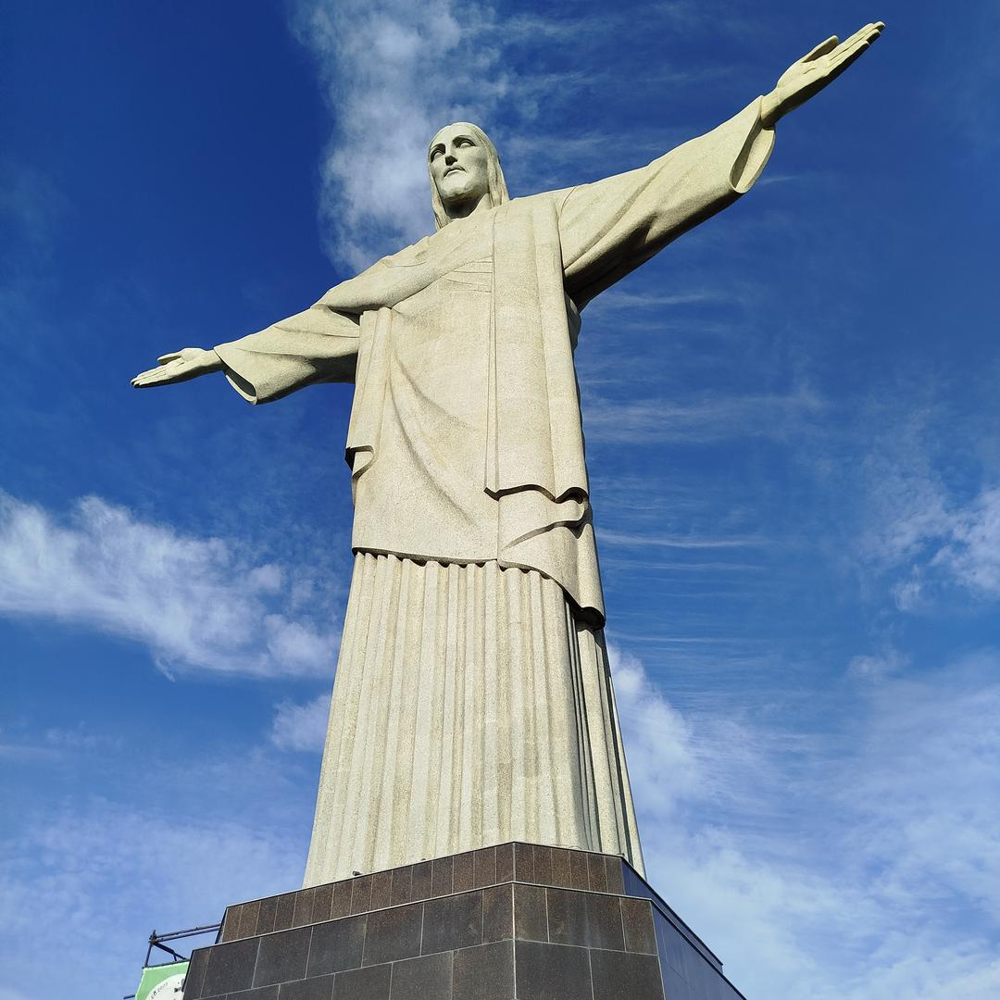
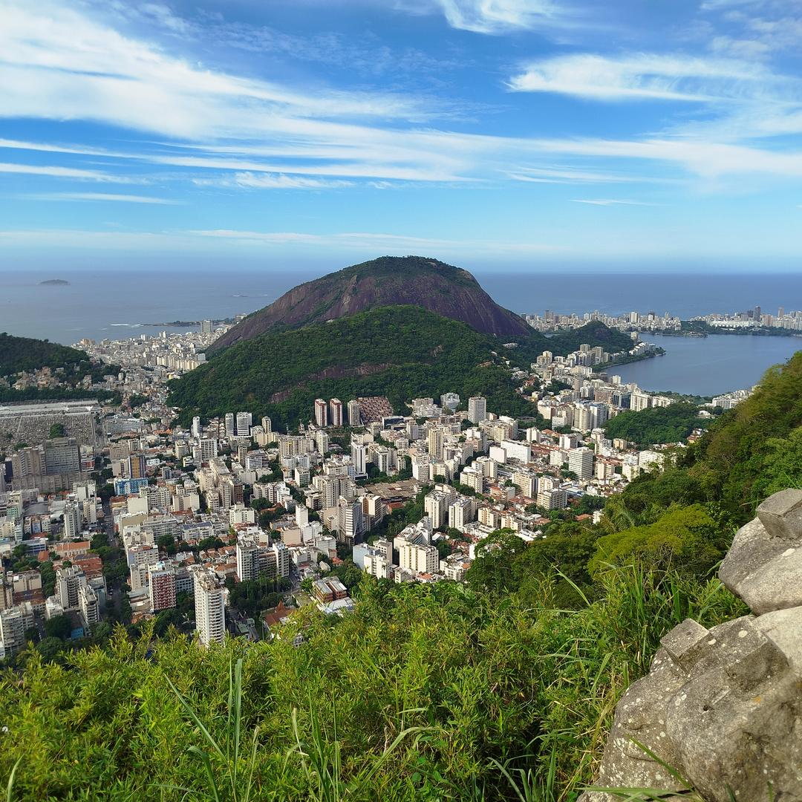
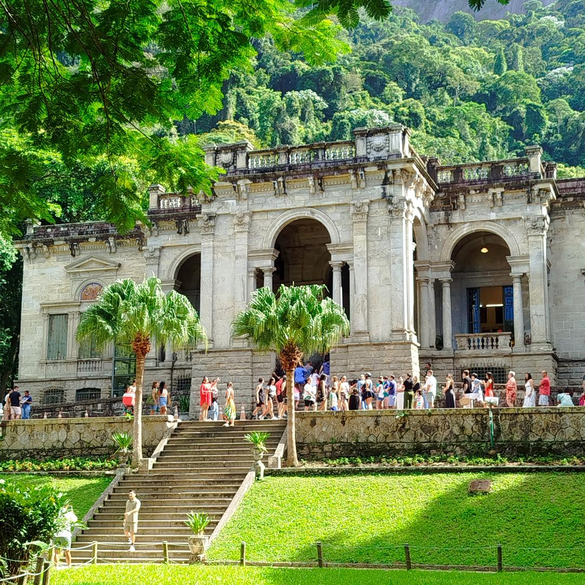
 Bordeaux
Bordeaux
 Tallin & Riga Christmas Markets
Tallin & Riga Christmas Markets
 Barcelona, Vic & Girona
Barcelona, Vic & Girona